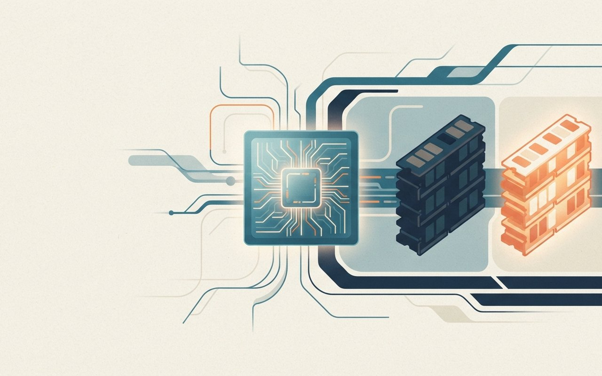
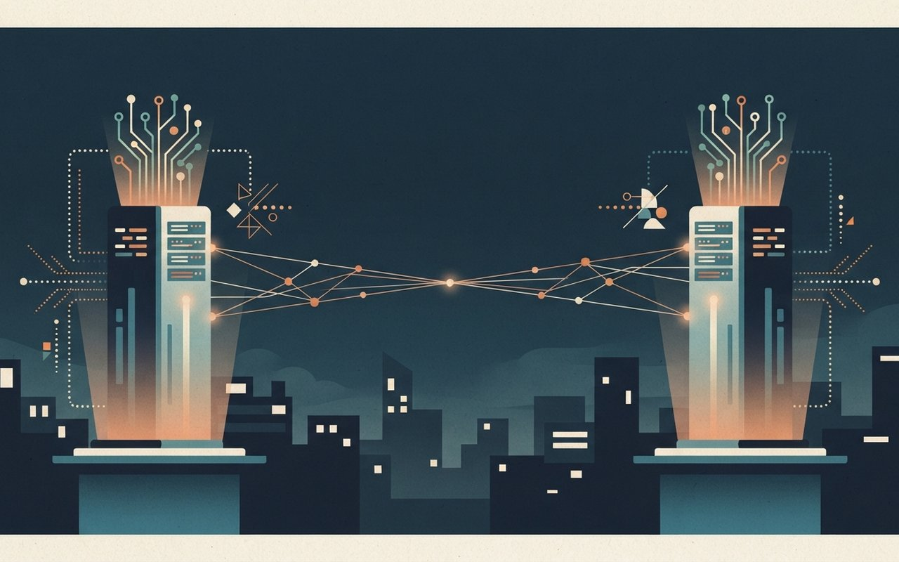
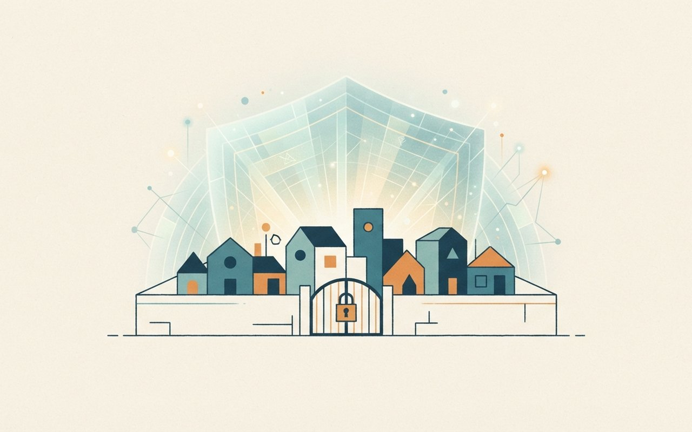
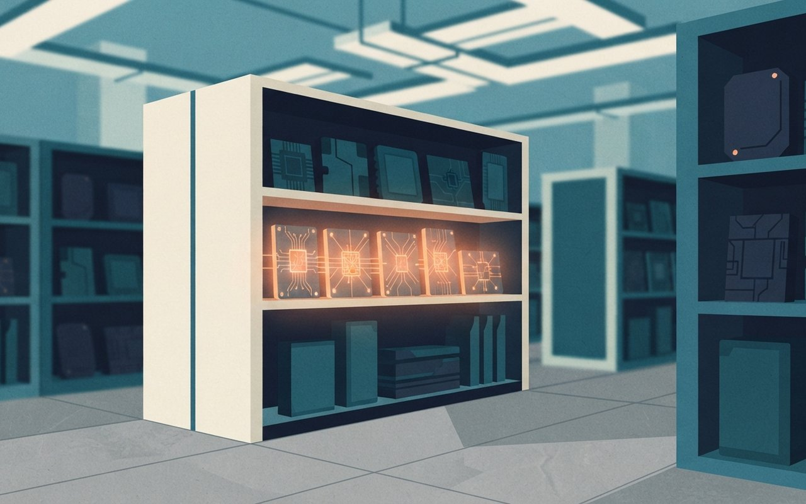

엔비디아는 차세대 루빈 GPU의 메모리 대역폭을 출하 사양에서 낮췄고, 네이버에는 10억 달러를 투자합니다. 구글은 사이버 방어용 모델 제미나이 4 카본을 일부 방어자에게만 열었고, 오라클 클라우드는 엔비디아 외 칩을 늘립니다. 뉴욕주는 미성년자 대상 위험 챗봇 기능을 금지했고, 체인얼리시스는 외부 침입 사고를 공지했습니다.
🎧 낭독 원고 보기
11월 2일 월요일, AI 브리프입니다. 주말 사이 쌓인 테크 소식 여섯 가지를 전해 드립니다. 반도체와 투자, 모델, 정책, 보안 순서입니다.
먼저 엔비디아입니다. 엔비디아가 9월에 차세대 루빈 GPU 사양을 조용히 낮췄고, 출하 제품에 그대로 반영됐습니다. GPU 한 개당 메모리 대역폭이 22에서 19.2 TB/s로, 연결 대역폭인 NVLink는 3.6에서 3.0 TB/s로 줄었습니다. 반면 연산 성능과 메모리 용량은 그대로입니다. 엔비디아는 이유를 설명하지 않았습니다. 랙 단위로 보면 베라 루빈 NVL72의 메모리 대역폭은 1,580에서 1,400 TB/s로 내려갔습니다.
엔비디아는 네이버에도 10억 달러를 투자합니다. 지분은 약 4.54퍼센트로 3대 주주가 될 전망입니다. 납입일은 11월 6일로 일주일 미뤄졌고, 11월 3일에 환율로 최종 금액이 확정됩니다. 신주는 1년간 의무 보유 대상입니다. 네이버는 브룩필드와 최소 90억 달러 규모 AI 컴퓨팅 인프라 계약을 이미 체결했습니다.
구글은 사이버 방어에 특화한 제미나이 4 카본을 발표했습니다. 취약점 찾기 점수가 88.2퍼센트로 높지만 안전장치 없이 측정한 결과이고, 지금은 일부 사이버 방어자에게만 열려 있습니다. 일반 공개 일정은 가능한 한 빨리라고만 밝혔습니다. 간접 프롬프트 인젝션 공격 성공률은 앞선 모델 아르곤의 0.7퍼센트에서 0.0퍼센트로 내려갔다고 합니다.
오라클 클라우드는 엔비디아 외 칩을 늘리겠다고 밝혔습니다. 지금 쓸 수 있는 것은 엔비디아 루빈 랙과 포지트론의 추론 칩이고, 구글 TPU와 세레브라스 칩은 2027년에 들어옵니다. 재라페뇨 가속기와 SambaNova 칩은 아직 일정이 없습니다.
정책 소식입니다. 뉴욕주가 18세 미만에게 위험한 AI 챗봇 기능 12개 범주를 금지하는 법에 서명했습니다. 사람인 척하기, 자해 부추기기, 선정적 대화 등이 포함되고 2027년 1월 1일 시행됩니다. 위반 한 건당 최대 25,000달러입니다.
마지막은 보안입니다. 블록체인 분석업체 체인얼리시스가 외부 침입 사고를 공지했습니다. 사용자 이름과 이메일 등이 접근됐지만, 회사는 비밀번호와 수사 내용은 접근되지 않은 것으로 판단한다고 밝혔습니다. 모두 회사 설명입니다.
지금까지 11월 2일 AI 브리프였습니다. 자세한 내용과 출처는 카드뉴스에서 확인하세요.
Hardware — 엔비디아
減
루빈 사양 하향
엔비디아, 루빈 GPU 메모리 대역폭을 22→19.2 TB/s로 낮췄다 — 연산 성능은 그대로
엔비디아가 9월에 차세대 '루빈' GPU 사양을 조용히 낮췄고, 이 수치가 출하 하드웨어에 반영됐다. GPU 한 개당 HBM4 메모리 대역폭은 22→19.2 TB/s, NVLink는 3.6→3.0 TB/s로 줄었다. 스케일아웃 네트워킹은 0.4→0.45 TB/s로 올랐다. HBM4 용량(288GB)과 FP4 추론 50 PFLOPS·학습 35 PFLOPS는 그대로다(ServeTheHome).
랙 단위로 보면 Vera Rubin NVL72의 메모리 대역폭은 1,580→1,400 TB/s, NVLink는 260→216 TB/s로 내려갔다. 8개 GPU 서버 HGX Rubin NVL8은 HBM4 용량이 2.3→2.0TB, 메모리 대역폭이 176→130 TB/s다. 매체는 HGX NVL8 기준 HBM4 스택 8개 중 7개만 쓰는 것으로 추정했고, 엔비디아는 이유를 설명하지 않았다.
확인 한계ServeTheHome 단일 본문 ⚠ 7개 스택 사용은 필자의 추정 · 엔비디아는 예전에도 수치를 '잠정치'라 했음
🤖 알고 보면 달라지는 것
숫자가 줄었다고 곧 성능이 떨어진다는 뜻은 아니다. 연산 성능은 그대로이고 메모리와 연결 대역폭만 깎였다. 거대 모델 학습·추론에서 이 대역폭이 얼마나 병목이 되는지는 기사에 나오지 않는다. 퍼센트 감소율은 매체마다 달라 TB/s 값만 적었다.
ServeTheHome — 루빈 사양 변경ServeTheHome(10/31) 단일 매체 · 감소율(%)은 서술이 달라 싣지 않고 TB/s 값만 적음 (확인 2026-11-02)
엔비디아 루빈 GPU, 메모리 대역폭 하향
엔비디아가 루빈 GPU의 메모리 대역폭을 22에서 19.2 TB/s로 낮췄어요. 연산 성능은 그대로이고 이유는 설명하지 않았어요.
1,400 TB/s|NVL72 랙 메모리 대역폭(조정 후)
Abstract close-up of a glowing computer chip with memory stacks beside it and one stack dimmed, conceptual schematic, not a real photograph, no text, no logos

Business — 네이버
投
네이버 투자
엔비디아, 네이버에 10억 달러 투자 — 지분 약 4.54%, 납입은 11월 6일로 일주일 미뤄졌다
엔비디아가 제3자배정 유상증자로 네이버에 10억 달러(중앙이코노미 원화 환산 약 1조 4,809억 원)를 투자한다. 신주 724만 1,564주를 주당 20만 4,500원에 받아 지분 약 4.54%, 3대 주주가 될 전망이다. 이해진 의장 지분은 4.03%에서 약 3.84%로 낮아진다(중앙이코노미).
납입일은 10월 30일에서 11월 6일로, 신주 상장은 11월 20일에서 27일로 미뤄졌다. 11월 3일 환율로 최종 주식 수와 원화 금액이 확정되고, 신주는 1년간 의무 보유 대상이다. 네이버는 브룩필드와 최소 90억 달러 규모 AI 컴퓨팅 인프라 계약을 이미 체결했다(중앙이코노미). 더퍼블릭은 네이버클라우드가 실제 매출과 연계해 사용료를 내는 구조를 택했다고 전했다.
투자엔비디아 10억 달러 · 신주 724만 1,564주 · 주당 20만 4,500원 · 약 1조 4,809억 원
조건신주 1년 의무 보유 · 브룩필드와 최소 90억 달러 AI 인프라 계약 체결(중앙이코노미)
확인 한계금액·주식 수·일정은 두 매체 일치 ⚠ 매출 연계 사용료는 더퍼블릭 단일 · 원화 금액은 환율에 따라 11/3 확정
🤖 알고 보면 달라지는 것
납입일이 일주일 밀렸다는 점과 11월 3일에 숫자가 확정된다는 점이 핵심이다. 환율에 따라 원화 금액과 지분율이 조금 달라질 수 있어 '약'이 붙은 값은 확정 전 숫자다. 투자금의 사용처나 협력 규모는 기사에 구체적으로 나오지 않는다.
중앙이코노미 — 엔비디아 네이버 투자더퍼블릭 — 확정·상장 일정중앙이코노미(10/30 08:39, 수정 08:54)·더퍼블릭(11/1 08:54) 일치 · 더퍼블릭 본문의 곱셈 환산(약 1조 4,800억 원)과 '10억 달러(약 1조 3,400억 원)' 표기 차이는 환산 기준 차이로 보여 중앙이코노미 값을 씀 (확인 2026-11-02)
엔비디아가 네이버에 10억 달러 투자
엔비디아가 네이버에 10억 달러를 투자해 지분 약 4.54%를 갖게 돼요. 납입은 11월 6일로 일주일 미뤄졌고 11월 3일에 금액이 확정돼요.
724만 주|새로 발행하는 신주 수
Two abstract glowing server towers connected by a thin bridge of light over a calm night cityscape, conceptual schematic, not a real photograph, no text, no logos

Model — 구글
盾
제미나이 4 카본
구글 '제미나이 4 카본' — 취약점 찾기 88.2%, 하지만 일부 사이버 방어자에게만 열렸다
구글이 10월 28일 사이버 방어에 특화한 '제미나이 4 카본'을 발표했다. 가장 강력한 모델이라고 소개했고 2주 전 나온 '아르곤'의 후속이다. Artificial Analysis 지능 지수 v5.0에서 59점으로 1위다. 취약점 찾기(SEC-bench Pro) 88.2%, 익스플로잇(ExploitGym) 54.8%, 패치(CWE-bench) 71.0%다. 간접 프롬프트 인젝션 공격 성공률은 아르곤 0.7%에서 0.0%로 내려갔다.
다만 이 벤치마크는 안전장치(가드레일) 없이 돌린 결과라고 구글이 밝혔다. 구글은 미국 정부의 자발적 사전 모델 시험에도 참여하고 있다. 접근은 이번 주 일부 사이버 방어자부터 열렸다. 딥마인드의 '페어윈드' 프로그램으로 신뢰 파트너에게 넓히며, 일반 공개 일정은 '가능한 한 빨리'라고만 했다. 입력 100만 토큰당 2달러·출력 10달러는 도입가이고 이후 4달러·20달러다.
발표10/28 · 아르곤 후속 · AI 지수 v5.0 59점으로 1위
벤치마크취약점 찾기 88.2% · 익스플로잇 54.8% · 패치 71.0%(가드레일 없이 측정)
안전간접 프롬프트 인젝션 성공률 0.7%→0.0%(아르곤 대비)
접근일부 사이버 방어자만 · 신뢰 파트너로 점차 확대 · 일반 공개 일정 미정
가격100만 토큰당 입력 2달러·출력 10달러(도입가) → 4달러·20달러 · 캐시 입력 95% 할인
확인 한계구글 공식 블로그 단일 · 수치는 회사 발표 ⚠ 가격 인상 시점 날짜는 구글 본문에 없음
🤖 알고 보면 달라지는 것
성능표보다 눈여겨볼 곳은 접근 조건이다. 가드레일 없이 시험한 수치이므로 공개 서비스 성능과 같다고 읽기는 어렵다. 누구나 쓸 수 있는 모델이 아니라는 점이 이번 발표의 핵심이다.
구글 — 제미나이 4 카본 소개구글 블로그(10/28) 공식 단일 출처 · 모든 수치는 회사 설명 · 교차 확인 못 함 · '구글 쇼크' 증시 하락과의 연관은 확인되지 않아 연결하지 않음 (확인 2026-11-02)
구글 제미나이 4 카본, 방어용 모델 공개
구글이 사이버 방어 특화 모델 제미나이 4 카본을 발표했어요. 취약점 찾기 88.2%지만 지금은 일부 사이버 방어자에게만 열렸어요.
59점|AI 지수 v5.0 1위 점수
A friendly digital shield made of light protecting a row of small abstract buildings with a locked gate, conceptual schematic, not a real photograph, no text, no logos

Hardware — 오라클
換
오라클 새 칩
오라클 클라우드, 구글 TPU·세레브라스 칩 들인다 — 지금 쓸 수 있는 건 엔비디아 루빈과 포지트론
오라클 클라우드(OCI)가 10월 27일 라스베이거스 오라클 AI 월드에서 엔비디아 외 칩을 늘리는 계획을 밝혔다. 엔비디아 Vera Rubin NVL72·Vera CPU와 Positron Atlas 추론 칩은 지금 바로 쓸 수 있다(Data Center Knowledge).
구글 TPU(학습·추론)와 세레브라스 WSE(고속 추론)는 2027년에 들어오고, TPU 도입은 여러 해에 걸쳐 늘어난다. OpenAI·브로드컴의 '재라페뇨' 가속기와 SambaNova SN50은 일정이 없다. 애널리스트 브렌던 버크는 구글이 TPU를 내부에서만 쓰는 것보다 공개하는 편이 가치가 높다고 말했다.
발표10/27 오라클 AI 월드(라스베이거스)
지금엔비디아 Vera Rubin NVL72 · Vera CPU · Positron Atlas 추론 칩
2027년구글 TPU(학습·추론, 여러 해에 걸쳐 확대) · 세레브라스 WSE(고속 추론)
일정 없음OpenAI·브로드컴 재라페뇨 가속기 · SambaNova SN50
확인 한계Data Center Knowledge 단일 ⚠ 오라클이 '구글 클라우드 밖에서 TPU를 제공하는 첫 하이퍼스케일러'가 되겠다고 밝혔으나 회사 주장이라 싣지 않음
🤖 알고 보면 달라지는 것
'오픈 실리콘'이라는 말이 붙었지만 지금 쓸 수 있는 칩은 엔비디아와 포지트론뿐이고, 구글 TPU와 세레브라스는 2027년이다. 발표된 칩과 실제 제공 시점을 구분해 읽어야 한다.
오라클 클라우드가 구글 TPU와 세레브라스 칩을 들인다고 밝혔어요. 다만 이 칩들은 2027년부터이고 지금은 엔비디아 중심이에요.
2027년|구글 TPU·세레브라스 도입 시점
A modern data center aisle with several differently shaped glowing chip modules on shelves, one set lit and others dim, conceptual schematic, not a real photograph, no text, no logos

Policy — 뉴욕주
法
뉴욕 챗봇법
뉴욕주, 18세 미만에게 위험한 AI 챗봇 기능 12개 범주 금지 — 2027년 1월 시행
뉴욕주 캐시 호컬 주지사가 미성년자 대상 AI 챗봇 안전법(S.9051-B/A.10379-C)에 서명했다. 18세 미만에게 12개 범주의 위험한 동반자형 챗봇 기능을 금지하며, 사람인 척하기·자해 부추기기·선정적 대화 등이 포함된다. 2027년 1월 1일 시행이고 위반 건당 최대 25,000달러다(IAPP).
법무장관이 민원 포털을 운영한다. 연령 확인은 여러 방식을 써야 하고 그중 하나는 정부 신분증에 의존하지 않아야 한다. 확인한 연령 데이터는 확인 뒤 삭제해야 하며, 법원은 불법 수집한 개인정보의 삭제를 명령할 수 있다.
서명호컬 뉴욕주지사 · S.9051-B/A.10379-C
금지18세 미만 대상 12개 범주 위험 기능(사람인 척하기·자해 부추기기·선정적 대화 등)
시행2027-01-01 · 위반 건당 최대 25,000달러
연령 확인복수 방식 · 정부 신분증 비의존 방식 1개 이상 · 확인 후 연령 데이터 삭제
확인 한계IAPP 단일 ⚠ 12개 범주의 전체 목록은 기사에 일부만 나옴 · 한국 적용 여부와 무관
🤖 알고 보면 달라지는 것
금지하는 것은 챗봇 전체가 아니라 미성년자 대상 위험 기능이다. 연령 확인 정보를 확인 뒤 지우게 한 조항은 확인 과정에서 개인정보가 쌓이는 것을 막으려는 장치로 읽힌다. 시행까지 약 두 달 남았다.
뉴욕주가 18세 미만에게 위험한 AI 챗봇 기능 12개 범주를 금지했어요. 사람인 척하기와 자해 부추기기 등이 포함되고 2027년 1월 1일부터 시행돼요.
25,000달러|위반 1건당 최대 금액
A child-safe tablet screen showing a friendly chat bubble with a protective fence around it, soft pastel flat illustration, conceptual schematic, not a real photograph, no text, no logos
Security — 침입 공지
侵
체인얼리시스 침입
체인얼리시스 침입 공지 — '공격형 에이전트' 기법으로 이름·이메일 접근, 비밀번호는 아니라고 밝혀
블록체인 분석업체 체인얼리시스가 10월 30일 보안 사고를 공지했다. 외부 행위자가 공격형 에이전트(agentic) 기법으로 시스템과 내부 도구에 무단 접근했다는 것이다. 접근된 정보는 사용자 ID·이름·이메일·조직 내 역할 라벨이다.
회사는 현재까지 수사 내용(그래프·메모·사건), 거래·조회 결과, 평문 비밀번호, MFA 비밀값, 세션 토큰은 접근되지 않은 것으로 판단한다고 밝혔다. 바이낸스 도난과는 무관하다고 선을 그었고, 조직별 접근 기록 상세는 분석이 끝나면 따로 공개하겠다고 했다.
공지10/30 · 회사 블로그
수법외부 행위자가 '공격형 에이전트' 기법으로 시스템·내부 도구에 무단 접근(회사 설명)
접근됨사용자 ID · 이름 · 이메일 · 조직 내 역할 라벨
접근 안 됨(현재 판단)수사 내용 · 거래·조회 결과 · 평문 비밀번호 · MFA 비밀값 · 세션 토큰
확인 한계회사 블로그 단일 ⚠ '에이전트가 침입했다'는 표현과 바이낸스 무관은 회사 설명이며 독립 검증 없음
🤖 알고 보면 달라지는 것
공지문은 '무엇에 접근됐는지'와 '무엇은 아닌지'를 나눠 적었다. 비밀번호와 MFA 비밀값이 빠졌다는 판단은 현재까지의 것이고, 조직별 상세는 분석 뒤에 나온다. 에이전트 기법이라는 표현은 회사의 설명이다.
체인얼리시스 — 10월 30일 보안 사고 공지체인얼리시스 공식 블로그(10/30) 단일 출처 · 교차 확인 못 함 · 침입 방식·범위·바이낸스 무관 모두 회사 주장 (확인 2026-11-02)
체인얼리시스 침입, 접근 범위 공개
체인얼리시스가 외부 침입 사고를 공지했어요. 이름과 이메일은 접근됐지만 비밀번호와 수사 내용은 아니라고 회사가 밝혔어요. 바이낸스와는 무관하대요.
10월 30일|보안 사고 공지일
A night office with a glowing door slightly ajar and a careful guard lamp, abstract shapes, conceptual schematic, not a real photograph, no text, no logos